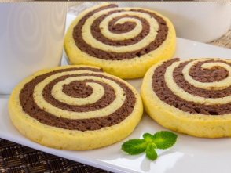

Печенье вкусное, рассыпчатое, нежное и очень нарядное. Готовится просто, а результат обязательно порадует вас и ваших близких. Из указанного количества ингредиентов получается 20–25 штук.

Масло растереть с сахаром и ванильным сахаром.Добавить яйца.Перемешать.Добавить разрыхлитель и муку. Замесить тесто.Тесто разделить на две части.В одну добавить какао. Перемешать.Светлое тесто раскатать в квадрат.Темное тесто необходимо раскатать в точно такой же по размеру квадрат.Для этого советую вырезать квадрат из фольги (по размеру светлого). Раскатать на фольге темное тесто.Переложить темное тесто на светлое (фольгой вверх).Фольгу убрать.Свернуть рулет. Положить его в морозилку на 10–15 минут (для того, чтобы тесто немного застыло и его проще было резать).Рулет разрезать на кусочки (шириной около 1 см).Противень застелить бумагой для выпечки или немного смазать маслом.Выложить печенье. Поставить в разогретую до 180 градусов духовку.Выпекать в течение 15–20 минут.
Приятного аппетита!